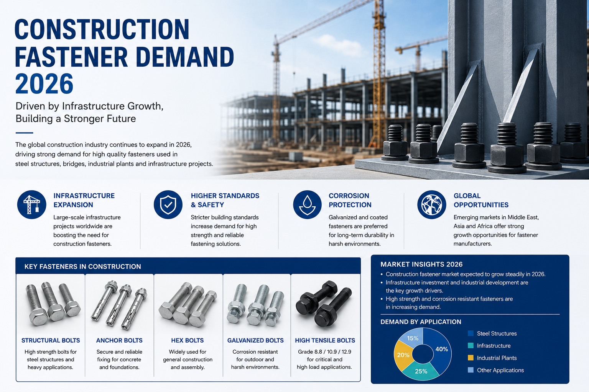
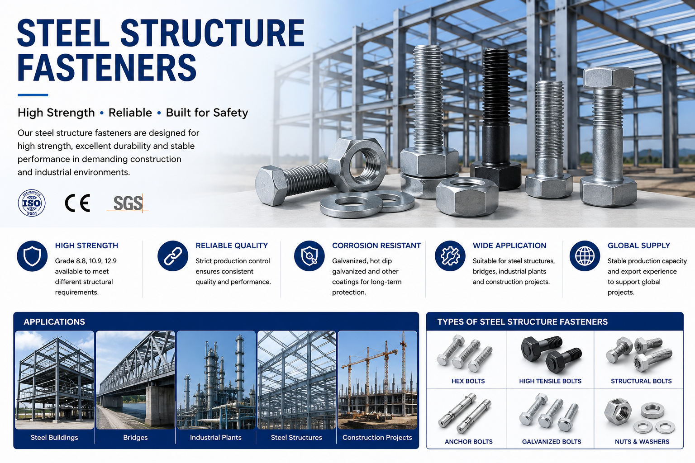
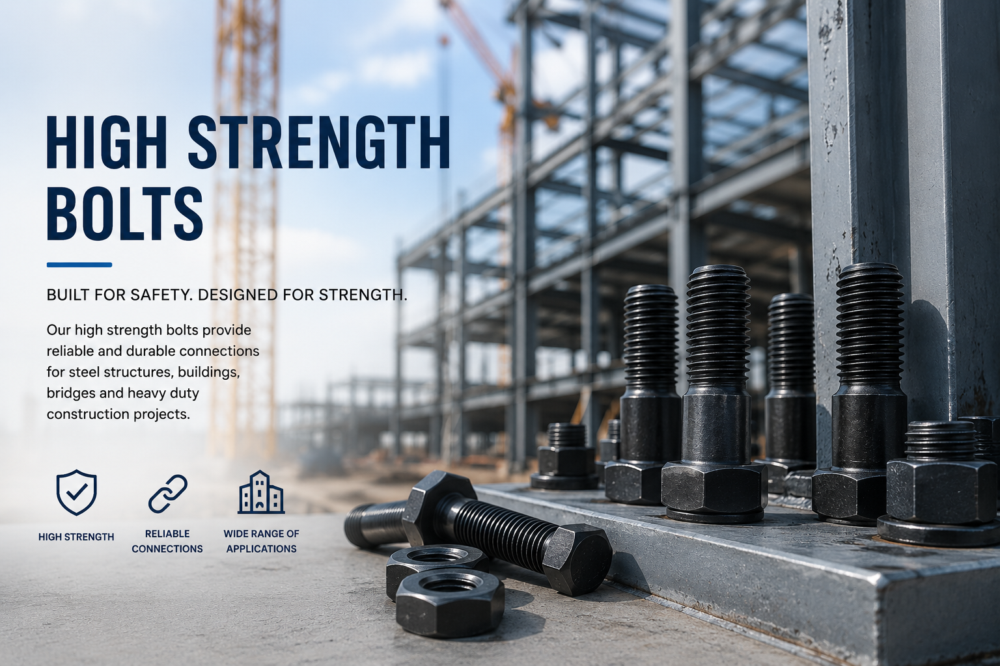
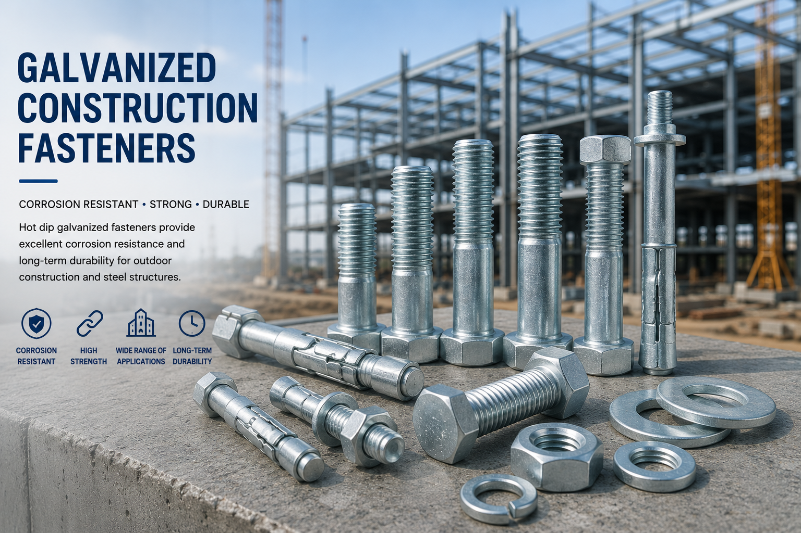

La demanda global de elementos de fijación para construcción continúa aumentando durante todo 2026. La expansión de infraestructura, los proyectos de estructuras de acero y el desarrollo industrial están impulsando una fuerte demanda de pernos de alta resistencia y sistemas de fijación.

Proyectos de Infraestructura Impulsan el Consumo de Elementos de Fijación
Los proyectos de infraestructura a gran escala en Medio Oriente, el Sudeste Asiático y África continúan apoyando a la industria de elementos de fijación. Los edificios de acero estructural, puentes, plantas industriales y proyectos de transporte requieren grandes cantidades de pernos de construcción y productos de fijación.
- Pernos estructurales
- Pernos hexagonales de alta resistencia
- Pernos de anclaje
- Elementos de fijación galvanizados en caliente
- Pernos para estructuras de acero

Los Pernos de Alta Resistencia Siguen Teniendo Alta Demanda
Los pernos de grado 8.8, 10.9 y 12.9 continúan siendo ampliamente utilizados en aplicaciones de construcción e industriales. Los compradores se centran cada vez más en la resistencia del producto, la resistencia a la corrosión y los estándares de calidad estables.
Los fabricantes de elementos de fijación con capacidad de producción estable y experiencia en exportación se están convirtiendo en proveedores preferidos para los compradores globales.

Los Elementos de Fijación Galvanizados Atraen Más Atención
Los pernos galvanizados en caliente y los elementos de fijación resistentes a la corrosión son cada vez más populares en proyectos de construcción al aire libre y entornos hostiles. La demanda del mercado de Medio Oriente sigue siendo particularmente fuerte.
- Pernos estructurales HDG
- Pernos de anclaje galvanizados
- Elementos de fijación para construcción exterior
- Pernos resistentes a la corrosión

Perspectivas del Mercado Global
Se espera que el mercado global de elementos de fijación para construcción mantenga un crecimiento estable durante el resto de 2026. Los fabricantes que se centren en el control de calidad, la entrega rápida y los precios competitivos seguirán obteniendo oportunidades en los mercados internacionales.
Se espera que la demanda de pernos estructurales, pernos de anclaje y sistemas de fijación industrial se mantenga fuerte a medida que la inversión en infraestructura continúe en todo el mundo.
Precios: Los compradores deben confirmar los requisitos de materia prima y acabado superficial con anticipación para reducir las rondas de revisión.
Para proyectos con entrega urgente o compras repetidas, una hoja de requisitos clara con estándar, tamaño, cantidad y acabado puede acelerar significativamente la cotización.